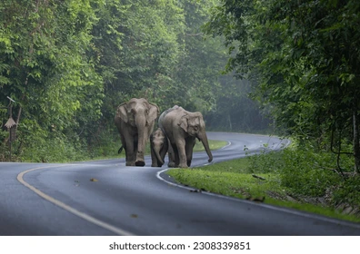
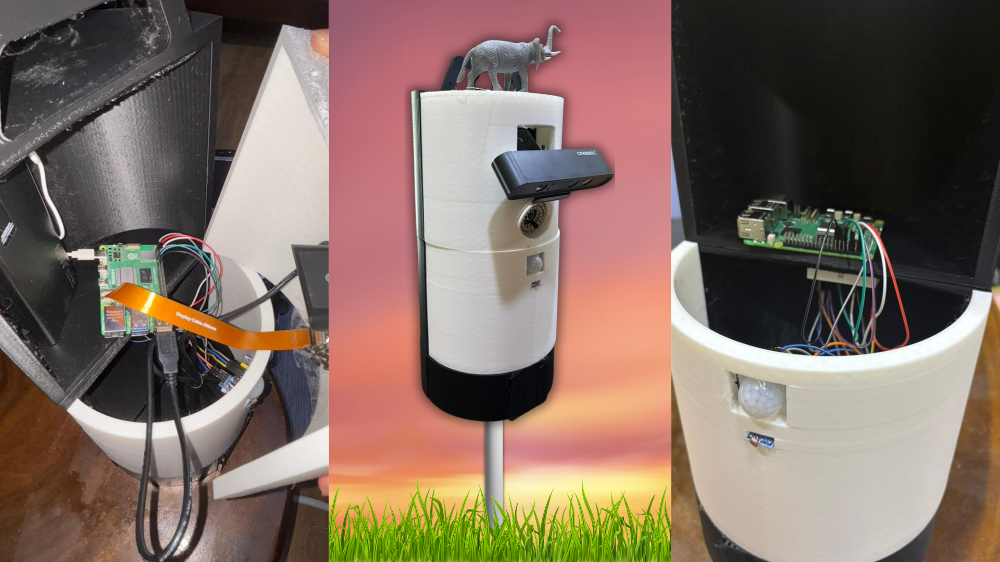
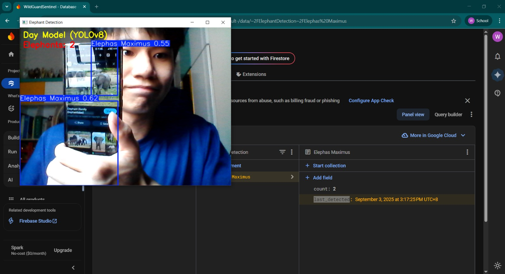
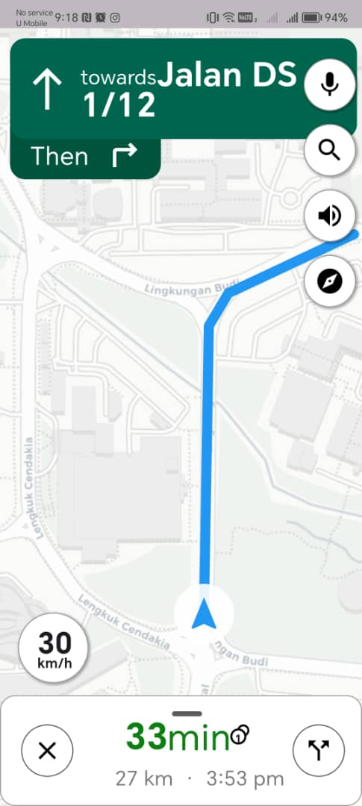

SWDD Pole
Smart Wildlife Detection & Deterrent Pole System

Tech Stack
Overview
The Smart Wildlife Detection & Deterrent Pole (SWDD Pole) is an AI-powered roadside safety system designed to reduce wildlife-vehicle collisions. Developed for the 2025 Shell Selamat Sampai Varsity Challenge (SSVC), the system integrates real-time animal detection with automated deterrent mechanisms and driver alerts. By combining computer vision, embedded systems, and mobile connectivity, the solution enhances both wildlife protection and road safety.
Awards & Honors
SWDD Pole was recognized as a Top 20 Finalist at the 2025 Shell Selamat Sampai Varsity Challenge (SSVC), organized by Shell Malaysia. The project was acknowledged for its innovative approach to addressing road safety and wildlife conservation challenges.
Problem
Wildlife-vehicle collisions are a significant concern in areas near forests and highways, leading to:
- Danger to drivers and passengers
- Injury or death of wildlife, especially large animals like elephants
- Lack of early warning systems for drivers
- Limited real-time monitoring of animal movement near roads
- Ineffective or non-adaptive deterrent methods
These issues highlight the need for an intelligent, real-time system to detect and prevent potential collisions.
Solution
SWDD Pole introduces a dual-pole smart system that combines AI-based animal detection with automated deterrent and alert mechanisms. The first pole, placed near forest edges, uses a YOLOv5-based object detection model trained on both day and night elephant datasets to detect approaching wildlife. It utilizes a combination of PIR sensors and light sensors to activate the appropriate camera (Astra camera for daytime and Pi camera for nighttime), improving power efficiency by ensuring the system only runs when necessary.
Once an animal is detected, the system triggers the second pole located near the roadside. This pole emits ultrasonic waves to deter animals from approaching the road and activates an LED panel to warn nearby drivers. Simultaneously, the system uploads detection data to a cloud database, which is integrated with a map-based mobile application to provide real-time alerts to drivers, enhancing situational awareness and safety.
Key Features
-
AI-Based Wildlife Detection (YOLOv5)
Detects elephants using trained models for both day and night conditions
-
Dual-Pole System Architecture
Separates detection (forest side) and deterrent/alert (roadside) functions
-
Adaptive Camera Switching
Uses light sensors to switch between Astra cam (day) and Pi cam (night)
-
Motion-Triggered Activation
PIR sensors activate the system only when movement is detected, improving power efficiency
-
Ultrasonic Deterrent Mechanism
Emits sound waves to prevent animals from approaching the road
-
Driver Alert System (LED Panel)
Provides immediate visual warnings to drivers
-
Real-Time Cloud & Map Integration
Uploads detection data to Firebase and displays alerts on a map-based mobile app
Future Development
Due to time constraints during the competition, the model was trained specifically for elephant detection. Future development will focus on expanding the dataset and training the model to detect a wider range of wildlife, particularly endangered and high-risk animals. Enhancements in hardware durability and energy efficiency will also be explored for long-term outdoor deployment. In addition, further testing in real-world conditions will be conducted to optimize the effectiveness of ultrasonic deterrents and improve the reliability of real-time alerts for drivers.
Project Gallery


